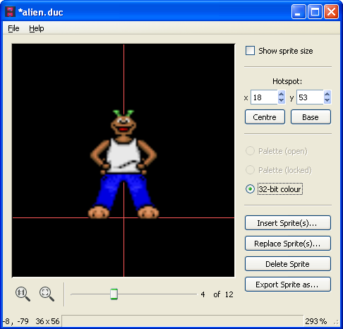
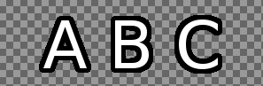
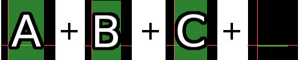

On Mac, there's a "new sprite bank" entry in the Tools menu of the Development Kit. On other platforms, the Sprite Bank Editor is a separate program. Use the SLUDGE sprite bank editor to create the character, object and mouse cursor animation frames used in your game. This is how the sprite bank editor looks like with Egor the Ego loaded.

Choose "Open" from the "File" menu. Then, select a file to load.
Win/Linux: Choose "New" from the "File" menu. The program will return to a state without sprites loaded.
First of all, find the location in the sprite bank where you'd like to load an image using the slider on the bottom. (On Mac, you can also scroll left/right.) You can then either insert images before the selected sprite (by pressing "Insert Sprite(s)...") or replace the selected sprite (and following sprites if you select multiple images - currently only possible on Win/Linux) by pressing "Replace Sprite(s)...". If you push the slider to the right end, you will find an empty spot which allows adding spites to the end of the sprite bank.
The palette stuff is a relict from when SLUDGE didn't support 32-bit colour. Just toggle the "32-bit colour" radio button and that's it.
Anyway, if the radio button "Palette (open)" is selected, any new colours used by the image you're adding which aren't already in the palette are added automatically. If "Palette (closed)" is activated and if the image uses colours which don't appear in the sprite bank's palette, the closest colours which do exist in the palette will be used. If you're adding a sprite to a bank with no palette (for example, if you're creating a new bank from scratch) you can't use a closed palette as otherwise there will be no colours from which to find a closest one. Each sprite bank can use only one palette, and the maximum number of colours is 255.
The hotspot for a sprite is the point around which all scaling is to be done, and also the point which will be positioned at any given (x, y) when the sprite is displayed. For a mouse pointer, the hotspot should be positioned at the tip of the arrow or the centre of the crosshair (and so on). For a character, it is suggested that the hotspot is the point at ground level directly beneath the character's body, between the feet.
You can enter the co-ordinates of the hotspot on the right, making it easy to be pixel-perfect, but there are also the buttons "Centre" to set the hot-spot to the centre of the image (useful for inventory icons) and "Base" to set the hotspot to halfway across the bottom row of pixels (approximately the correct hotspot for characters, although you may need to then tinker with the values manually).
Win/Linux: You can also use the mouse to move the sprites to another hotspot.
Win/Linux: Sometimes the top, bottom or side of a sprite may stick out of the viewing area because of the location of the axes. In such a situation, position the mouse over the viewing region, hold down the right mouse button and drag the mouse to move the viewing area. When you're happy, release the mouse button.
Mac: You can click and drag to move the viewing area around. Zoom in and out by scrolling.
To save a sprite as a PNG file, first select the sprite you wish to save. Then hit the "Export sprite as..." button and choose where, and under which name, to save the image file.
To delete a sprite from a sprite bank, select it using the slider and then hit the "Delete Sprite" button.
To save the currently loaded sprite bank, hit either the "Save" or "Save as..." item in the "File" menu. Hitting "Save" will overwrite the file from which the sprite bank was loaded (or the file as which it was last saved, depending on which happened most recently). Hitting "Save as..." will prompt you to choose a location and name for the sprite bank file as which you wish to save.
When loading and saving individual sprites from / as TGA image files, the colour magenta (#FF00FF or 255, 0, 255) is used as transparent; the same colour as is treated as transparent by in the addOverlay and mixOverlay functions.
If you're loading and saving from/to PNG files, the aplha layer is used.
Fontify is a function that makes it easier to get fonts into SLUDGE, but it can also be used if you prefer to create your sprites on a single image before converting them into a sprite bank. It searches an image for segments that are horizontally seperated by transparency and creates a sprite out of each segment. An additional space character is created at the end of the sprite bank. As an example, lets take this image (the checkerboard pattern indicates transparency):

Fontify turns it into a sprite bank with these four sprites:

The green background is shown because the "Show sprite size" box is checked.
Fontify can be found in the "File" menu on Linux and Windows or in the "Tools" menu on Mac. After launching it you are first prompted for the width of the space character and then for an image to fontify.
SLUDGE and this SLUDGE documentation are copyright Hungry Software and contributors 2000-2010